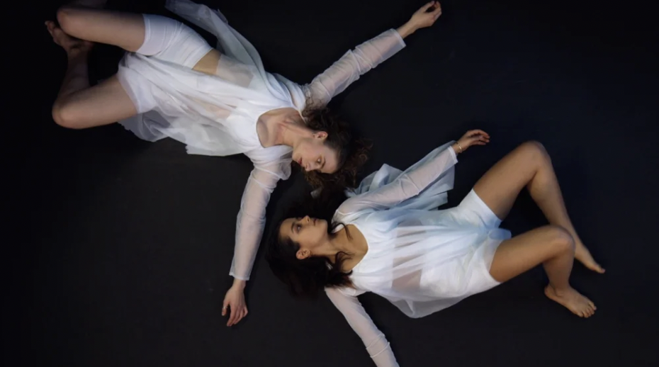

ART
DIRECTION
Creative direction across performance, film, installation, sound, and immersive technology,building visual worlds in which bodies, spaces, and systems tell one story.
R.E.S.T.A.G.E Collective
Creative platform for research, performance, and technology · 2025–present
Cycles, Live Performance
Creative direction, choreographic storytelling, and immersive experience · 2025
Cycles, Virtual Reality
360° film production, editing, and immersive direction · 2025
Rewiring Intimacy
Art direction, movement direction, sound design, and interactive storytelling · 2025

Echoes of Connection
Direction, production, film production, and post-production · 2023